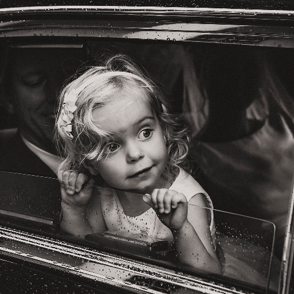
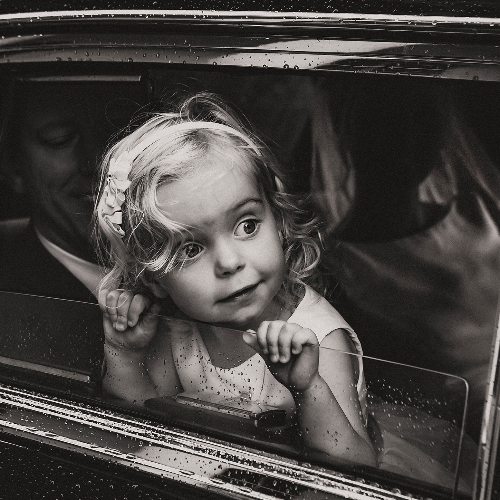

Honorable Mention (HM) Award, Transversalities: Photographs Without Borders, Portugal
Alhamdulillah, I have been awarded Honorable Mention (HM) of ” Transversalities: Photography Without Borders” in International Photography Contest in Portugal on the theme of ” The city and the urbanization “. As an awardee, I’ll get about 150 Euro and other accessories. My portfolio photos will also be exhibited (printed) later.


 
